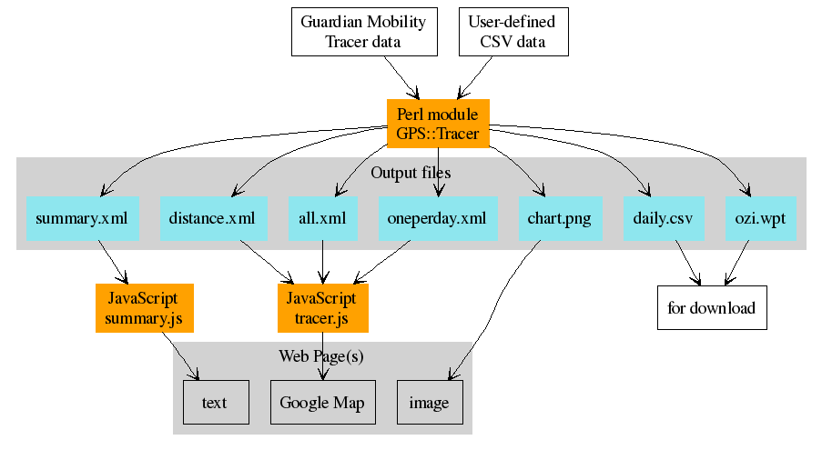

Displaying geographic routes
There are many software tools allowing to display trip routes from
data collected by various GPS and tracer devices. This document
describes one of them.
It consists of a Perl module GPS::Tracer that does collect
and re-format routing data, and from examples of several JavaScript
functions that display collected data using Google Maps.
The tool was developed primarily to read data from the customer web
site provided by Guardian
Mobility for their product "Tracer" (data are published there
after they are collected from the Globastar satellites). However, it
was made flexible enough that it can also read data from a simple CSV
format ("comma-separated values") instead from their secured web
site.
The original motivation for creating the tool was the Arctic student
expedition FrozenFive (2007) where
you can see their original route, created by the very same tool.
Architecture
One scenario is to use module GPS::Tracer in a periodically
and automatically repeated script (on UNIX machine called a
cronjob) and let the web pages read data from output files
anytime they are accessed from web browsers. As shown on this figure:

Perl module
The GPS::Tracer module has its own
documentation. It describes the formats off all related files, and
it shows what module methods may be used in your Perl scripts. This
distribution also includes a command-line script
fetch_and_create.pl that can be directly used in your
regular cronjobs.
JavaScript
The included JavaScript files are examples how to use outputs from the
GPS::Tracer module to create or enhanced web pages. They are
quite self-explanatory, containing many comments. Still, below a few
less immediately visible points is made. They can be found and
followed in the directory examples, in the page examples/example.html, and in the
JavaScript files in the same directory. (The page probably reported
errors - unless you are displaying it using a URL that starts with
http://localhost/... - see the first comment below).
- Google Map needs your own key
- In order to display a Google Map in your web page, you need to
sign up for a Google Maps API key here. Once you
have it, put it directly into your page, in its head
section. You may have more than one Google key if you want to show the
same page from various web servers. For example:
<!-- make this page runable from several servers, with different Google Maps keys -->
<script language="javascript" type="text/javascript">
function include (script_url) {
document.write ('<' + 'script');
document.write (' language="javascript"');
document.write (' type="text/javascript"');
document.write (' src="' + script_url + '">');
document.write ('</' + 'script' + '>');
}
var hostname = document.location.hostname;
var key;
if (hostname == "localhost")
key = "ABQIAAAAZhe5F7Vv-1Xq9DDyIlEQXxT2yXp_ZAY8_ufC3CFXhHIE1NvwkxSg6J0s1S0DuVD-dFi2DIRpZq2LOg";
else if (hostname == "...")
key = "...";
else if (hostname == "...")
key = "...";
else if (hostname == "...")
key = "...";
include ("http://maps.google.com/maps?file=api&v=2&key=" + key);
</script>
- Loading function
- We want to do some actions (such as prepare a Google Map) when
a web page loads. There are two ways to do it. One is to call it
directly in the body HTML tag, and one is to overwrite the
window.onload function at the end of the page body. The
latter case allows more flexibility (also it allows displaying a text,
for example Loading..., during the loading time). The example
uses the latter one, and the loading is in the file examples/loading.js.
- Displaying Google Maps
- It is done by functions in the file examples/tracer.js. Of course, these
function need to get data produced by the Perl module
GPS::Tracer. The JavaScript is hopefully
self-explanatory. Just one comment: it has a hard-coded location of
the map. However, it could be done better, by reading the first marker
first and use its location as the map centre.
- Displaying summary
- It is done by functions in the file examples/summary.js. It just displays
"so far travelled" kilometres as read from the
examples/data/output-summary.xml file. As it is done, it
uses a machine gun to kill a mosquito. It needs to read just
one attribute from a very short XML file and it uses the full-flown
tool examples/prototype.js to do it. One solution is to use
the same functionality from the Google Maps API (even though this has
nothing to do with any map).
- HTML elements names
- Last but not least, be aware that the example JavaScript files
rely on some names of HTML elements in your web page. If you use
different names, you need also to change the names in the scripts. The
used names are errormsg, totalkms (used in
summary.js file), and map, progressDisplay,
markerCount, lastPoint, density (used in
tracer.js file).
Sewing together Perl module and JavaScript
If the GPS::Tracer produces output file on the same machine
as the web pages are served from, there is no need to sewing them
together. However, if not, your cronjob needs also to send
created output files to another machine. It can be done by many ways,
one example is to use ftp by a Perl script like this:
#!/usr/bin/perl -w
#
use strict;
use warnings;
use Net::FTP;
# --- Configuration section ---
my $server = 'YOUR_FTP_HOSTNAME';
my $user = 'YOUR_USER_NAME_FOR_THE_FTP_SERVER';
my $password = '...AND_YOUR PASSWORD';
my $local_dir = 'data';
my $remote_dir = 'whatever/data';
# --- end of configuration ---
my @files = ('output-all.xml', 'output-distance.xml', 'output-oneperday.xml',
'output-summary.xml', 'output.csv', 'output-ozi.wpt',
'output-chart.png');
chdir $local_dir or die "Cannot cd to '$local_dir': $!\n";
my $ftp = Net::FTP->new ($server)
or die "Cannot connect to $server: $@";
$ftp->login ($user, $password)
or die "Cannot login: ", $ftp->message;
$ftp->pasv()
or die "Cannot set passive mode: ", $ftp->message;
$ftp->binary()
or die "Cannot set binary: ", $ftp->message;
$ftp->cwd ($remote_dir)
or die "Cannot cd to '$remote_dir': ", $ftp->message;
foreach my $file (@files) {
$ftp->put ($file)
or die "Cannot upload '$file': ", $ftp->message;
}
$ftp->quit;
Comments and bug reports welcome
Please send them to the email below. I will try to answer your
questions, or even try to apply your suggestions.